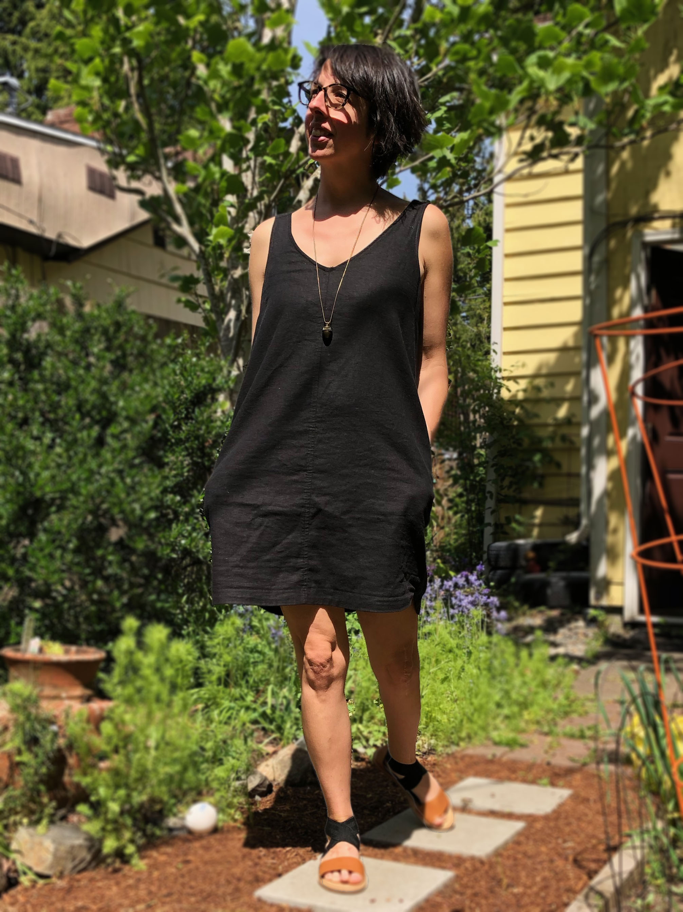
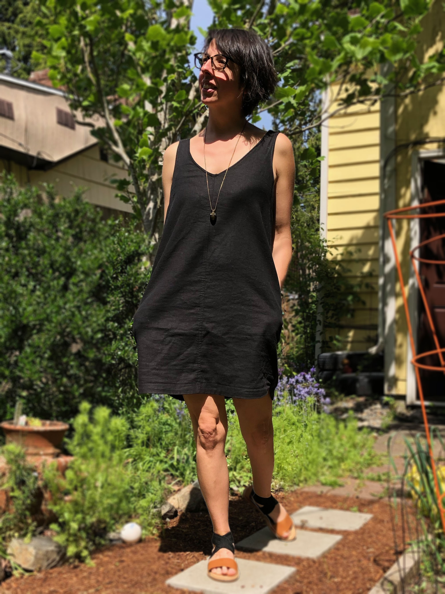

September 20, 2019
Copying a favorite RTW dress
 

I bought this dress pictured on the left at Old Navy a few years ago and despite it being, well, Old Navy and quite inexpensive it really was a nicely structured, well made garment. It was a made of a nice linen-cotton blend, lined with finished seams. The front and back center seams were flat-felled, which was a term I didn't even know before I made the areinte pants. Oh, and did I mention it has POCKETS? So yes, for me this is pretty much the perfect, spring/summer/fall throw on and go dress, exepct the pattern of the material. While I like it a lot, it's not an everyday dress.
Enter and LBD: little black dress. I realized this would be the perfect shape for a throw on and go dress for spring, summer and fall. I loved the fit and ease of the dress. I had some black linen/rayon blend from another project laying around so I decided to copy the dress
I've copied a pair of pants before and was really happy with the result. I turned the garment inside-out and traced all the pieces onto muslin. Then added the seam allowances. I used the muslin as pattern pieces and cut the final garment.
Now I have a pattern and can make this dress any color I want!